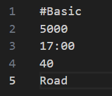
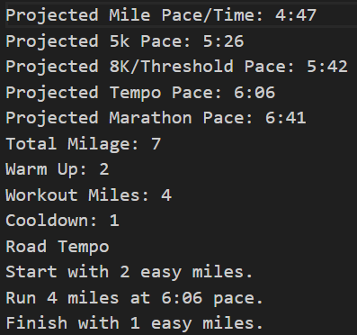
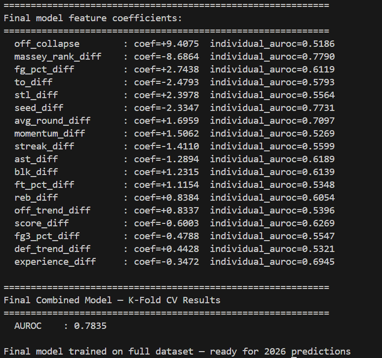
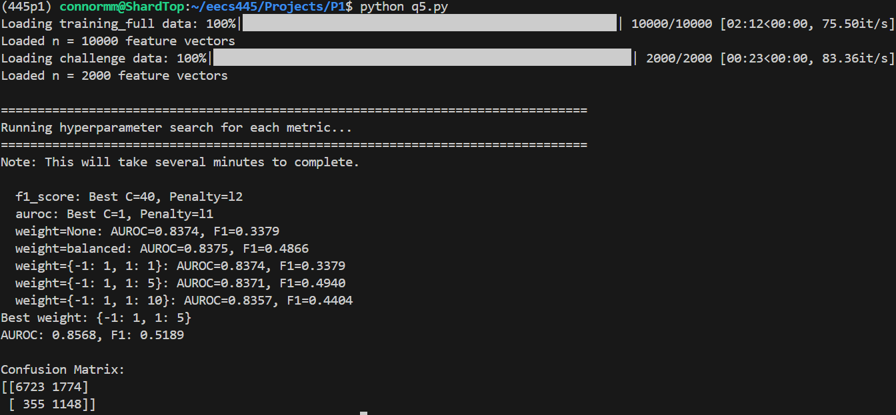
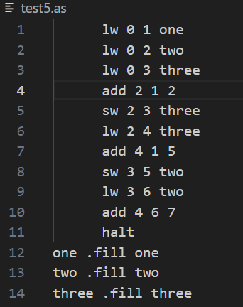
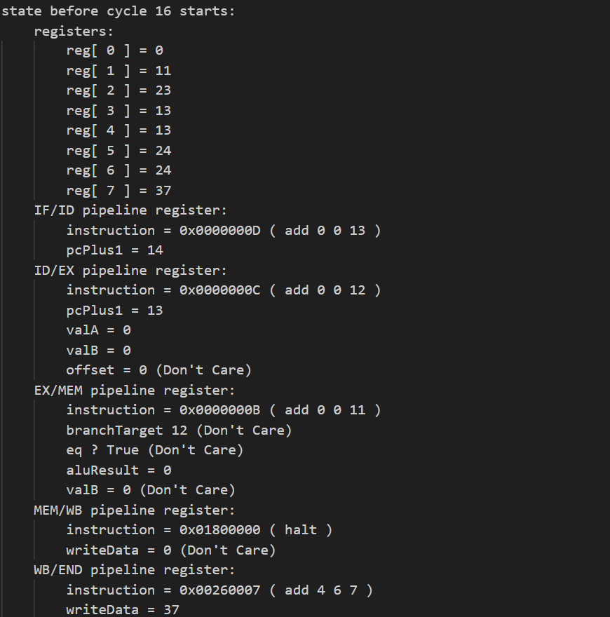
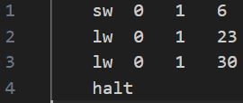
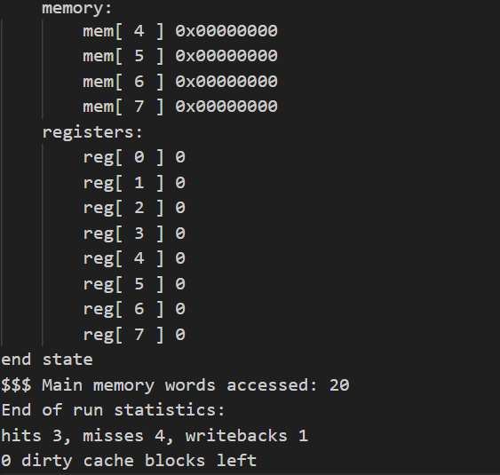

EECS 441/StudyBuddy (Mobile App Development For Entrepreneurs) Projects — 1 Project
StudyBuddy
TypeScript(React), JavaScript(React), SQL


- Built a full-stack mobile app with a live web version, helping college students find suitable study partners, complete with a user-report system and a published privacy policy.
- Designed a weekly schedule editor as a core interaction in the app, deployed with a Railway backend and an Expo frontend.
- Configured 25+ REST API endpoints and 7 PostgreSQL tables supporting user information and social features, with secure authentication via PostgreSQL credential verification and client-side token storage.
- Led a 4-person team, coordinating project structure and meeting cadence, running user interviews and feedback sessions with potential testers, and owning the final demo.
Personal Projects — 4 Projects
Personal Finance Dashboard
JavaScript (Node.js / React), C++, Python
- Designed and shipped a platform with 3 insight engines (anomaly detection, subscription price-creep detection, and category trend flagging) across 5 serverless API endpoints, with interactive drill-down from aggregate view to individual transactions.
- Engineered a C++ anomaly detection module (median/MAD-based outlier detection) and iterated through two failed approaches. The first was a JSON-string interface which created a bottleneck through parsing and unparsing the JSON string. The second was native Python dictionaries, which created a bottleneck through per-row object overhead. Finally, using numpy buffers to cross the Python/C++ boundary once per call instead of once per row worked, achieving a 7x speedup over Python-based implementations.
- Provisioned a serverless AWS backend (Lambda, API Gateway, DynamoDB, S3) with 100% Infrastructure as Code via SAM/CloudFormation.
Shattered Continuum (Video Game) (IN BETA PRODUCTION)
JavaScript (Kaboom.js)
Picture from Game:
Play Right Now!- Created a browser-based 2D-platformer with a procedural chunk-based level system, featuring a custom time-freeze mechanic with partial charge persistence.
- Engineered a physics-object cleanup system that destroys off-screen physics objects as the player traverses, fixing accumulation-driven performance issues and stabilizing gameplay at 30+ fps.
- Designed 10 levels alongside random and max-difficulty modes, each with 4 independent feature rolls, designed for replayability.
- Continued active development post-launch: recently replaced the placeholder character with a fully animated sprite featuring run and jump animations.
Running Workout Generator
C++
Example Input:

Example Output with flags -b -d -p:

- Constructed a C++ program that creates running workouts based on training information.
- Utilized enumerated classes and bash command line options to easily and quickly print out workout options.
- Optimizes the ideal workout based on 6 different inputs (Surface, Distance Goal, Training Mileage, etc).
March Madness Model
Python
Model Output:

- Built a logistic regression model predicting NCAA Tournament game outcomes, achieving 0.7835 AUROC.
- Engineered 18 custom features, including Massey rankings, momentum scoring, tournament experience, and an offensive collapse flag serving as an injury proxy.
- Trained on Kaggle's official 2003–2026 tournament dataset using 5-fold cross-validation and feature-weighted inputs.
EECS 445 (Machine Learning) Projects — 1 Project
ICU Unit Outcome Prediction System
Python (PyTorch)

- Built an end-to-end ML pipeline to predict ICU patient mortality across 12,000 patients, engineering features from 40 clinical variables using statistical aggregates (mean, median, range, std. deviation, max, and trend).
- Implemented Logistic Regression with L1/L2 regularization and RBF Kernel Ridge Regression, optimized via 5-fold stratified cross-validation with grid search over hyperparameters.
- Evaluated models across 7 performance metrics (AUROC, F1, Accuracy, Precision, Sensitivity, Specificity, Average Precision) with bootstrap confidence intervals for robust test-set estimation.
- Achieved an AUROC score above 0.85, with results visualized via confusion matrices and ROC curves.
EECS 485 (Web Systems) Projects / Fall 2025 — 3 Projects
Full-Stack Instagram Clone
Python, JavaScript(React), SQL, HTML, CSS

- Built a full-stack social media app with authentication, feed, posts, profiles, followers, explore, and comments.
- Configured 7 RESTful API endpoints and 19 dynamic routes with 5 SQL tables for data and authorization.
- Created React components for dynamic pages and static layouts, delivering fully functional features.
- Collaborated in a 3-person team using Git/GitHub, conducting code reviews and coordinating tasks.
Multithreaded Distributed MapReduce Framework
Python
- Developed a multithreaded system utilizing 4 parallel threads to coordinate distributed tasks.
- Engineered to handle 10+ concurrent worker nodes with stable throughput.
- Worked in a team of three, contributing to registration and shutdown workflows for worker management.
- Achieved sub-5-second processing times on benchmark datasets within a distributed MapReduce framework.
Search Engine With Distributed MapReduce Indexing
Python, SQL, HTML, CSS
Example Input


Example Output

- Developed a search engine over University of Michigan web pages, pairing it with a JavaScript frontend.
- Wrote tf-idf text analysis and a segmented 7-Stage MapReduce pipeline that can search 1000+ pages.
- Owned core implementation of the MapReduce pipeline, accounting for the majority of development effort.
EECS 370 (Intro To Computer Organization) Projects / Fall 2025 — 2 Projects
Pipelined Processor Simulation
C
Example Input:

Example Output:

- Built a simulated pipeline processor using LC2K assembly code as input.
- Was able to have the program give all information on every cycle, listing all register and memory information.
Memory Simulation
C
Example Input:

Example Output:

- Created a program that simulates computer processor memory with given LC2K assembly code as input.
- Would note every occasion information was transferred between either the memory, cache, or processor.
- Would keep track of cache hits, cache misses, and dirty cache blocks.
EECS 281 (Data Structures & Algorithms) Projects / Winter 2025 — 1 Project
SQL Clone (SillyQL)
C++
- Wrote a computer program over 1000 lines long that mimics keeping data with SQL commands.
- Included Add Table, Delete Table, Edit Table, Print Table (Both Print All and Print Where), and Join Table.
- Took Advantage of advanced C++ concepts such as utilizing both Binary Search Tree and Hash Map indexing and utilizing functors.